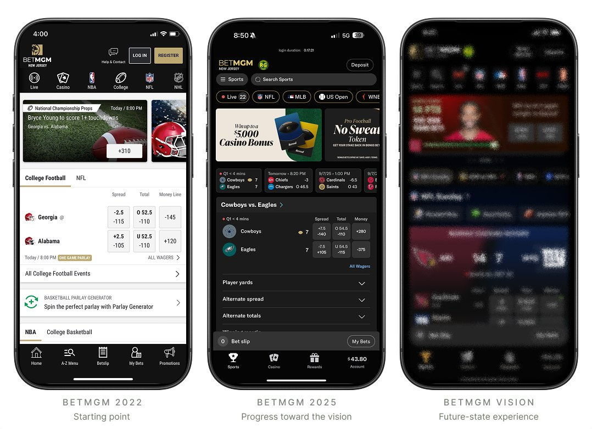
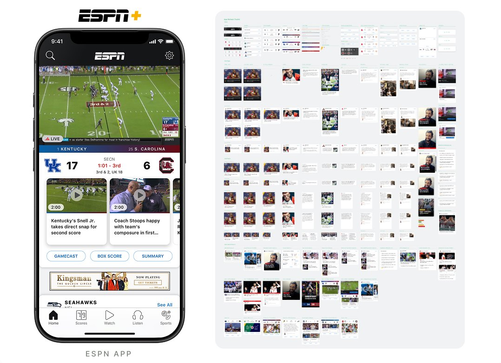
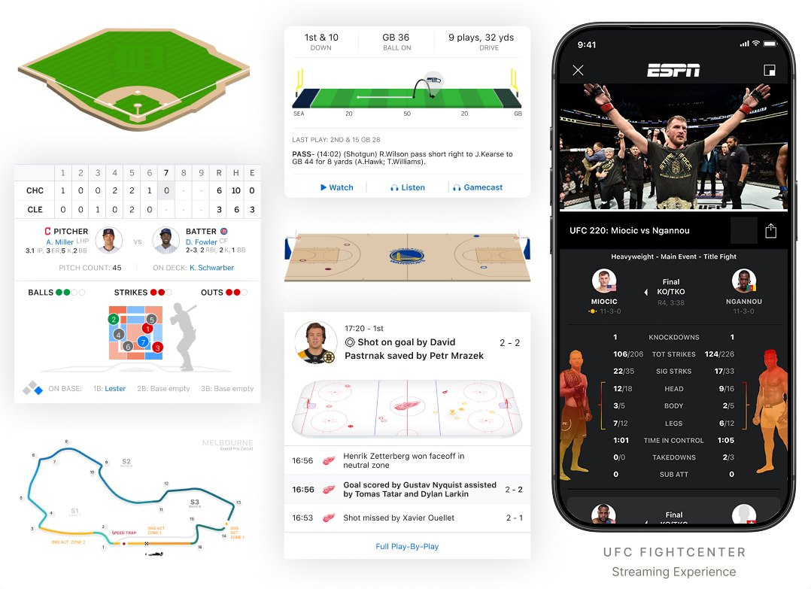
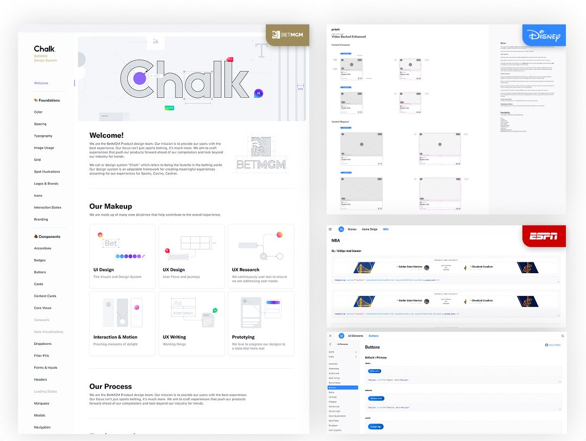
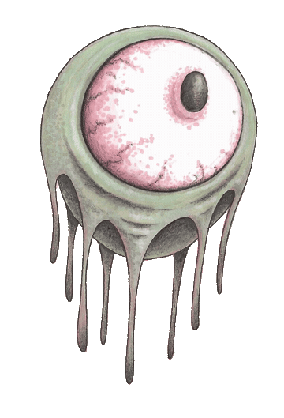
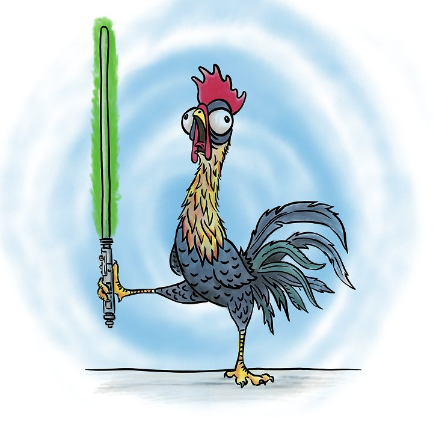
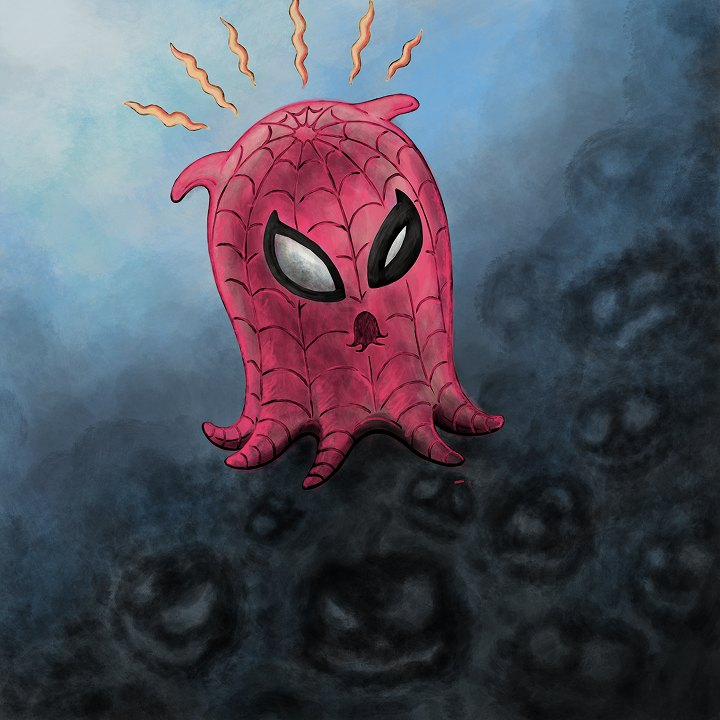
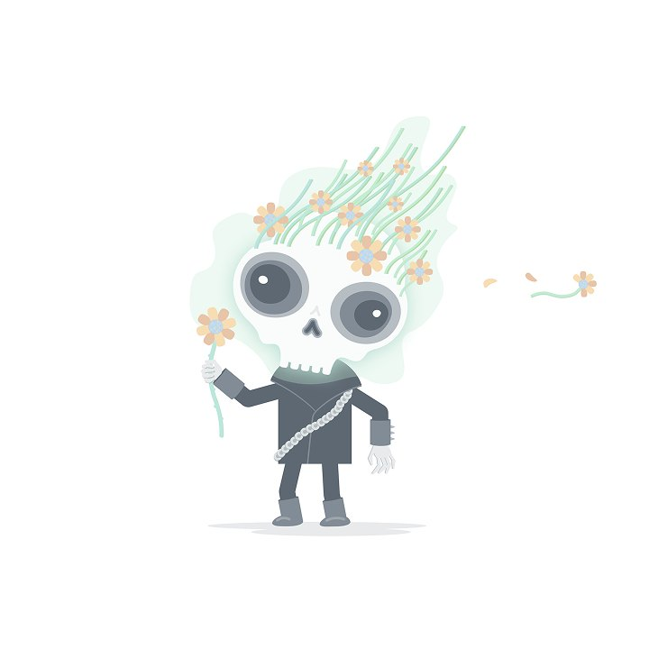

BetMGM
Product vision
Defined a multi-year vision that brought Sports, Casino, and Player Experience together around one premium experience — and presented it to executive leadership and the Board.
Product Design & Experience Leader
I’m a product design leader with 15+ years of experience building teams and products for sports fans and consumers across sports media, streaming, and gaming. I partner with product and engineering leaders to turn business strategy into product vision while building high-performing design teams, scaling design systems, and creating experiences customers love.
Experience
Selected work
Highlights, not case studies. Happy to walk through any of these in depth.

BetMGM
Defined a multi-year vision that brought Sports, Casino, and Player Experience together around one premium experience — and presented it to executive leadership and the Board.

ESPN
Principal UI designer for the 2018 ESPN App redesign and the launch of ESPN+. Architected the modular card framework that later informed Disney’s cross-brand component system.

ESPN
Defined the framework for live Gamecast experiences across major sports — reusable interaction patterns, animated playing surfaces, and real-time data visualization. Conceptualized UFC Fightcast.

BetMGM + ESPN / Disney
Built BetMGM’s multi-platform design system from the ground up, and led the evolution of ESPN’s Digital Design System. Systems as a way to scale craft, not just a component library.
Philosophy
The principles I bring to building teams, products, and design culture.
I’ve built and scaled design teams while creating an environment where designers have ownership, clear expectations, and opportunities to grow.
Leadership shouldn’t mean stepping away from the work. I stay close to design, prototype alongside teams, and use craft to explore ideas, raise quality, and push the product forward.
I connect customer needs and business goals to a clear product vision that aligns teams, motivates organizations, and creates a path from strategy to execution.
I look for the systems behind the work — from design systems and shared patterns to processes and ways of working that help teams move faster without sacrificing quality.
I create a culture people want to be part of. Great teams are built through trust, creativity, recognition, and opportunities for people to bring more of themselves to work.
Off the clock
I’ve been making things since I was little, which led me to a BFA from Hartford Art School in Visual Communication Design with a minor in Illustration.
I still draw most days and keep a sketchbook close. When I’m not using it for notes and ideas, I’m filling it with strange little creatures I call “things”. In addition, I find myself utilizing AI to create my own apps and I’m aspiring to publish a children’s book.


The Chicken Strikes Back

Eek, you guys made me Ink!

Flowers, Not Flames
Contact
Happy to talk design, teams, systems, or what you’re building next.
creationthing@gmail.com